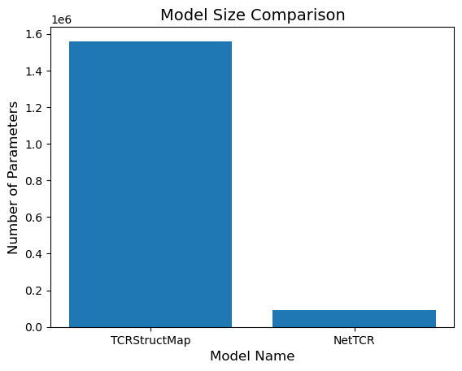
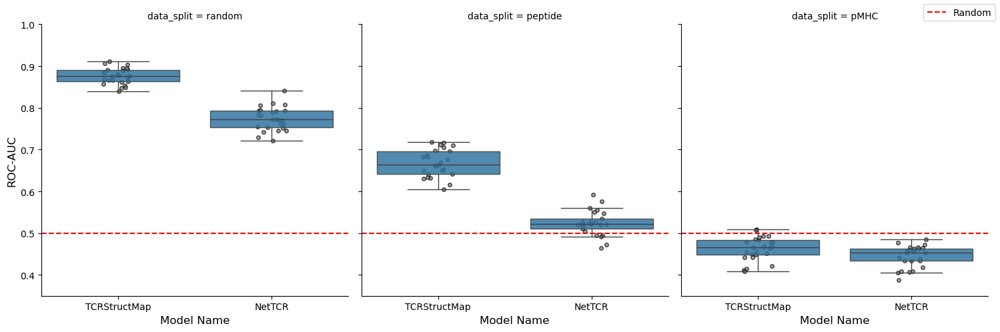
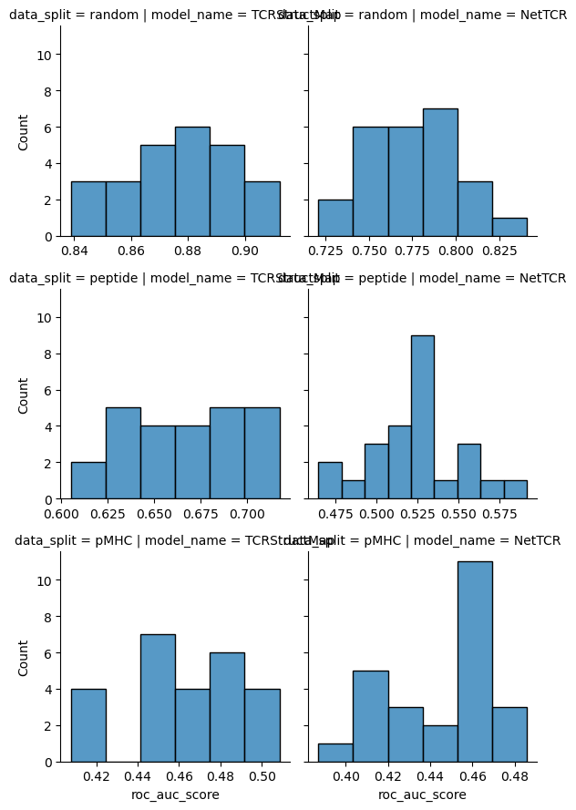

[1]:
from pathlib import Path
import matplotlib.pyplot as plt
import numpy as np
import pandas as pd
import seaborn as sns
import torch
from matplotlib.lines import Line2D
from nettcr.models import NetTCR
from scipy import stats
from sklearn.metrics import roc_auc_score
from tcr_antigen_prediction.models import TCRStructMap
[2]:
SIGNIFICANCE_LEVEL = 0.05
[3]:
model_names = ('TCRStructMap', 'NetTCR')
data_splits = ('random', 'peptide', 'pMHC')
base_dir = Path('data/processed/')
predictions = []
for data_split in data_splits:
sequences = pd.read_csv(f'data/interim/sequences_{data_split}_split.csv', index_col='index')
for model_name in model_names:
prediction_set = pd.read_csv(str(base_dir / f'{model_name}_predictions_on_sequences_{data_split}_split.csv'))
prediction_set['model_name'] = model_name
prediction_set['data_split'] = data_split
prediction_set = prediction_set.merge(sequences, how='left', left_on='index', right_index=True)
predictions.append(prediction_set)
predictions = pd.concat(predictions).reset_index(drop=True)
predictions = predictions[predictions['fold'] == predictions['sub_model_number']].reset_index(drop=True)
[4]:
overall_roc_auc = predictions.groupby(['data_split', 'model_name']).apply(
lambda group: roc_auc_score(group['label'], group['prediction']), include_groups=False
)
overall_roc_auc.name = 'roc_auc_score'
overall_roc_auc = overall_roc_auc.reindex(
pd.MultiIndex.from_product(
[data_splits, model_names],
names=['data_split', 'model_name'],
)
)
overall_roc_auc
[4]:
data_split model_name
random TCRStructMap 0.876085
NetTCR 0.775211
peptide TCRStructMap 0.666831
NetTCR 0.524658
pMHC TCRStructMap 0.471265
NetTCR 0.452818
Name: roc_auc_score, dtype: float64
Model Size
[5]:
def count_parameters(model: torch.nn.Module) -> int:
"""Count the number of parmeters in a pytorch model."""
return sum(parameter.numel() for parameter in model.parameters() if parameter.requires_grad)
model_sizes = [
(model_name, count_parameters(model))
for model_name, model in (('TCRStructMap', TCRStructMap()), ('NetTCR', NetTCR()))
]
plt.bar(x=[model_name for model_name, _ in model_sizes], height=[model_size for _, model_size in model_sizes])
plt.title('Model Size Comparison', fontsize=14)
plt.xlabel('Model Name', fontsize=12)
plt.ylabel('Number of Parameters', fontsize=12)
plt.show()
print('\n'.join([f'{model_name} size: {model_size}' for model_name, model_size in model_sizes]))

TCRStructMap size: 1559983
NetTCR size: 92529
Bootstrap ROC-AUC
[6]:
NUM_SAMPLES = 25
SAMPLE_SIZE = 500
indices = predictions['index'].unique()
rng = np.random.default_rng(123)
samples_metric_scores = []
for sample_num in range(1, NUM_SAMPLES + 1):
sample_indices = rng.choice(indices, SAMPLE_SIZE)
sample = predictions[predictions['index'].isin(sample_indices)]
for (model_name, data_split), group in sample.groupby(['model_name', 'data_split']):
score = roc_auc_score(group['label'], group['prediction'])
samples_metric_scores.append(
{
'sample_num': sample_num,
'data_split': data_split,
'model_name': model_name,
'roc_auc_score': score,
}
)
samples_metric_scores = pd.DataFrame(samples_metric_scores)
[7]:
grid = sns.FacetGrid(samples_metric_scores, col='data_split', col_order=data_splits, sharex=False, height=5)
grid.map_dataframe(
sns.boxplot,
x='model_name',
y='roc_auc_score',
order=model_names,
showfliers=False,
boxprops={'alpha': 0.85},
zorder=1,
)
grid.map_dataframe(
sns.stripplot,
x='model_name',
y='roc_auc_score',
order=model_names,
color='grey',
marker='o',
size=4,
edgecolor='black',
linewidth=1,
alpha=0.70,
zorder=0,
)
grid.refline(y=0.5, color='red')
refline_handle = Line2D([0], [0], color='red', linestyle='--', label='Random')
grid.figure.legend(handles=[refline_handle], loc='upper right')
grid.set(ylim=(0.35, 1.0))
grid.set_axis_labels('Model Name', 'ROC-AUC', fontsize=12)
plt.savefig('report/figures/comparison_TCRStructMap_NetTCR.svg')
plt.show()

[8]:
metric_scores_agg = pd.concat(
[
overall_roc_auc,
samples_metric_scores.groupby(['data_split', 'model_name'])['roc_auc_score']
.agg(['std'])
.sort_index(ascending=False),
],
axis=1,
)
norm_val = stats.norm.ppf(1 - SIGNIFICANCE_LEVEL / 2)
metric_scores_agg['ci'] = metric_scores_agg.apply(
lambda row, norm_val=norm_val: (
row['roc_auc_score'] - norm_val * row['std'],
row['roc_auc_score'] + norm_val * row['std'],
),
axis=1,
)
metric_scores_agg = metric_scores_agg.reindex(
pd.MultiIndex.from_product(
[data_splits, model_names],
names=['data_split', 'model_name'],
)
)
metric_scores_agg
[8]:
| roc_auc_score | std | ci | ||
|---|---|---|---|---|
| data_split | model_name | |||
| random | TCRStructMap | 0.876085 | 0.019209 | (0.8384358432460358, 0.9137340200255891) |
| NetTCR | 0.775211 | 0.028028 | (0.720277923896987, 0.8301439047589794) | |
| peptide | TCRStructMap | 0.666831 | 0.032473 | (0.6031860937066418, 0.730476027153012) |
| NetTCR | 0.524658 | 0.029321 | (0.4671894522130795, 0.5821264370421424) | |
| pMHC | TCRStructMap | 0.471265 | 0.028396 | (0.4156106231659526, 0.5269193794332403) |
| NetTCR | 0.452818 | 0.026165 | (0.4015344111526581, 0.5041006683757264) |
[9]:
def calculate_differences(df: pd.DataFrame) -> pd.DataFrame:
groups = list(df.groupby('model_name'))
groups = sorted(groups, key=lambda item: model_names.index(item[0]))
differences = {
'group_name_i': [],
'group_name_j': [],
'difference_roc_auc': [],
}
for i, (group_name_i, group_i) in enumerate(groups[:-1]):
for group_name_j, group_j in groups[i + 1 :]:
differences['difference_roc_auc'].append(
group_i['roc_auc_score'].iloc[0] - group_j['roc_auc_score'].iloc[0]
)
differences['group_name_i'].append(group_name_i)
differences['group_name_j'].append(group_name_j)
return pd.DataFrame(differences).set_index(['group_name_i', 'group_name_j'])
[10]:
overall_roc_auc_difference = (
overall_roc_auc.reset_index().groupby('data_split').apply(calculate_differences, include_groups=False)
)
samples_metric_scores_differences = (
samples_metric_scores.groupby(['sample_num', 'data_split'])
.apply(calculate_differences, include_groups=False)
.groupby(['data_split', 'group_name_i', 'group_name_j'])
.agg(['std'])
)
samples_metric_scores_differences.columns = ['_'.join(column) for column in samples_metric_scores_differences.columns]
metric_scores_difference = pd.concat([overall_roc_auc_difference, samples_metric_scores_differences], axis=1)
norm_value = stats.t.ppf((2 - SIGNIFICANCE_LEVEL) / 2, NUM_SAMPLES - 1)
metric_scores_difference['ci'] = metric_scores_difference.apply(
lambda row, norm_value=norm_value: (
row['difference_roc_auc'] - norm_value * row['difference_roc_auc_std'],
row['difference_roc_auc'] + norm_value * row['difference_roc_auc_std'],
),
axis=1,
)
metric_scores_difference = metric_scores_difference.sort_index(
level='data_split', key=lambda index: index.map(data_splits.index)
)
metric_scores_difference
[10]:
| difference_roc_auc | difference_roc_auc_std | ci | |||
|---|---|---|---|---|---|
| data_split | group_name_i | group_name_j | |||
| random | TCRStructMap | NetTCR | 0.100874 | 0.027986 | (0.04311433232932853, 0.15863370228633006) |
| peptide | TCRStructMap | NetTCR | 0.142173 | 0.031486 | (0.07718933365372059, 0.20715689795071124) |
| pMHC | TCRStructMap | NetTCR | 0.018447 | 0.021791 | (-0.026527441736019057, 0.06342236480682739) |
[11]:
grid = sns.FacetGrid(
samples_metric_scores,
row='data_split',
col='model_name',
row_order=data_splits,
col_order=model_names,
sharex=False,
)
grid.map_dataframe(sns.histplot, x='roc_auc_score')
plt.show()

[12]:
for data_split, data_group in samples_metric_scores.set_index('sample_num').sort_index().groupby('data_split'):
print(data_split)
print(
stats.ttest_rel(
data_group.query("model_name == 'TCRStructMap'")['roc_auc_score'],
data_group.query("model_name == 'NetTCR'")['roc_auc_score'],
alternative='greater',
)
)
print()
pMHC
TtestResult(statistic=np.float64(4.148521862974196), pvalue=np.float64(0.00018089579144915609), df=np.int64(24))
peptide
TtestResult(statistic=np.float64(22.813321976373004), pvalue=np.float64(4.429610003763589e-18), df=np.int64(24))
random
TtestResult(statistic=np.float64(18.29891634313508), pvalue=np.float64(6.66343198786044e-16), df=np.int64(24))